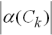
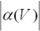
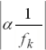

如果优化基于 SOL 101 线性静态解算方案，那么您可以使用 MinMax 目标来最小化多个载荷工况的最大响应值。
例如，假设存在两个载荷工况，每个载荷工况指定有两个节点。设计目标设为 MinMax，组操作符设为总和。各载荷工况中每个节点的响应值相加，得到各载荷工况的一个响应值。随后，软件确定当前最大载荷工况总和值并对此载荷工况执行最小化优化。
下表描述从 MinMax 公式项而言有效的设计响应类型。
柔度项 |
材料体积项 |
固有频率项 |
|
 |
 |
 |